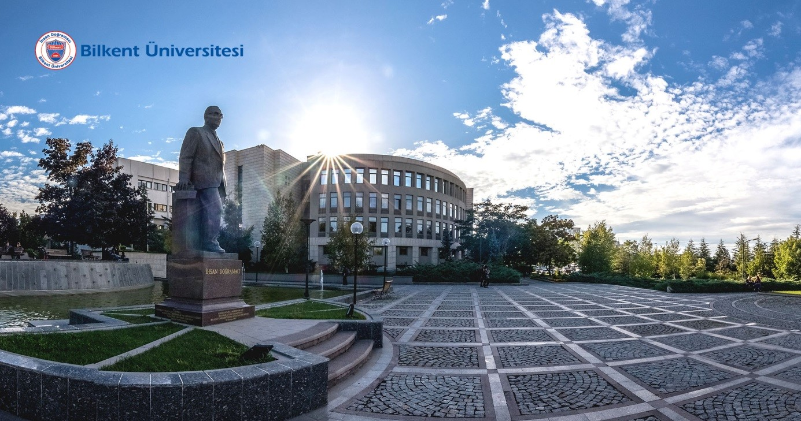

Bilkent University
General Information
İhsan Doğramacı Bilkent University, founded in Ankara in 1984, is the first foundation university in Turkey. The aim of the university was declared as "to be among the best universities in the world in terms of education quality and scientific research activities"; For this reason, the university was named Bilkent, an abbreviation of "Science City". Bilkent University’s faculties, schools and other academic units offer degree programs, enriched learning opportunities and the chance to study, not only in Ankara but in places across Turkey and in a number of other countries as well. Students benefit from a hallmark of education at Bilkent: close communication between faculty and students. A student-to-professor ratio of 14:1 creates an environment characterized by personal attention and instructor accessibility. Add in a faculty dedicated to teaching, with a true commitment to each student’s academic and personal advancement, and you have a combination that will put you on the path to a brilliant future.
Campus
Bilkent is a camping campus on 5,000 acres, 60% of which is wooded. There are three campsites on this vast land divided into valleys. Center (University departments, lodging and dormitories) Middle Campus (Academician lodgings, Faculty of Music and Arts) Eastern Vocational Preparatory Class, School, lodging and dormitories There are large green areas, concert hall, exhibition hall, library, indoor/outdoor sports fields, health center, cafe, restaurant and technopark within the campus.
Accommodation
Dormitories – consisting of 26 buildings with various designs and features, provide a peaceful, secure, comfortable, pleasant and hygienic atmosphere for more than 4,500 Turkish and international students from diverse backgrounds, who have chosen to take advantage of the excellence in higher education
Transportation
Transportation to Bilkent University campus is provided by private shuttle vehicles departing from two main points of Ankara (Tunus Street and Sıhhiye) every hour. Private shuttles are free for Bilkent students. You can also reach the university by metro, bus or minibus.
Address
Bilkent Üniversitesi 06800 Bilkent/Ankara/TÜRKİYE